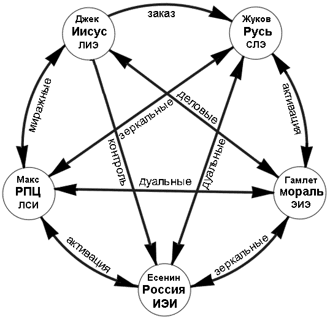

3. Отношения между главными действующими лицами
|
Есть теория, согласно которой в том случае, если кто-то точно выяснит, для чего и зачем появилась Вселенная, она тут же исчезнет, и ее заменит нечто другое, еще более бессмысленное и необъяснимое. Есть другая теория, согласно которой это уже произошло. Дуглас Адамс |
В предыдущих рассуждениях мы обосновали типирование «главных героев»; теперь надо разобрать отношения между ними. Приведем наглядную общую схему:

Теперь разберем каждый вид взаимодействий по отдельности. Заодно проведем дополнительную верификацию теории: если наши типирования верны, то отношения между рассматриваемыми ТИМами должны соответствовать историческому прошлому и картине социума, наблюдаемой в настоящем.
Примечание: каждая иллюстрация, приведенная ниже, представляет собой
фрагмент, который надо мысленно уложить в мозаику для получения полной картины.
Рисовать и так слишком много пришлось, знаете ли... Т.е. – во всех отношениях,
идущих «по ребру», должно быть не по три кубика, а по пять (и далее до полной
«мозаики»). Недостающие два легко экстраполируются сдвигом верхнего или нижнего
куба в соответствующее положение.